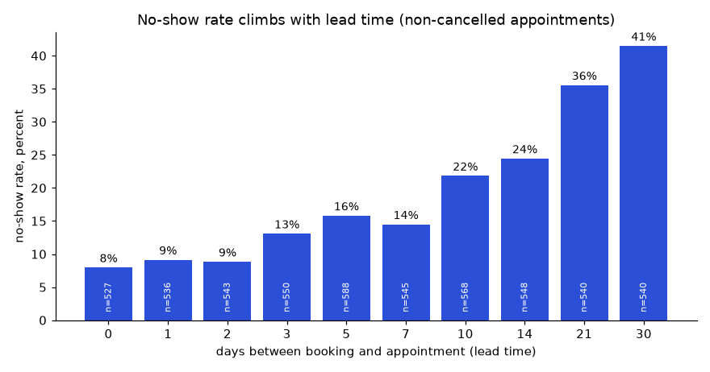

Chapter 15 gave you the working method and three projects. This chapter adds two projects that show two different strengths. The first, a 20-question case study, shows that you can turn a pile of tables into a short report that separates real findings from noise. This is the daily work of a data analyst. The second, a query-optimization lab, shows that you understand why a query is slow, can read a query plan, and can fix it and measure the fix. We use the working method of section 15.1 (question, success criteria, layout, checks, README) without repeating it. All code was run with Python 3 and SQLite 3.50. Timings depend on the machine, so read them as ratios, not as promises.
Question: a clinic loses money and patient time to missed appointments and long waits. What do the data say, and what should the clinic try first? Interviews and take-home tests for analyst roles are almost always this shape: a dataset, a list of questions, and a request for "your recommendations". Employers watch three things: correct SQL, sensible checking, and honest writing. A report that says "this difference may be noise" earns more trust than one that shouts every number.
GROUP BY, HAVING, boolean sums: Aggregation, GROUP BY, HAVING and FILTER (Chapter 3).CASE and dates with julianday and strftime: CASE, Strings, Dates and Times, JSON and Arrays (Chapter 6).RANK, LAG, ROW_NUMBER: Window Functions in Depth (Chapter 8).Hospital-clinic appointments, generated. 12 doctors in 4 departments, 1,500 patients, 6,000 appointments in 2024. We plant two patterns: the longer ahead an appointment was booked, the more likely a no-show; and Monday has longer waits. Your SQL should find them. Save as data/generate_data.py.
import sqlite3, random, sys
from datetime import date, timedelta
random.seed(5)
con = sqlite3.connect(sys.argv[1])
con.executescript("""
DROP TABLE IF EXISTS appointments; DROP TABLE IF EXISTS patients; DROP TABLE IF EXISTS doctors;
CREATE TABLE doctors (doctor_id INTEGER PRIMARY KEY, name TEXT NOT NULL, department TEXT NOT NULL);
CREATE TABLE patients (patient_id INTEGER PRIMARY KEY, age INTEGER NOT NULL, gender TEXT NOT NULL, city TEXT NOT NULL);
CREATE TABLE appointments (
appt_id INTEGER PRIMARY KEY, patient_id INTEGER NOT NULL REFERENCES patients,
doctor_id INTEGER NOT NULL REFERENCES doctors,
booked_on TEXT NOT NULL, appt_date TEXT NOT NULL,
status TEXT NOT NULL CHECK (status IN ('attended','no_show','cancelled')),
wait_minutes INTEGER, fee REAL NOT NULL);
""")
depts = ["General","Cardiology","Orthopedics","Pediatrics"]
con.executemany("INSERT INTO doctors VALUES (?,?,?)", [(i, f"Dr. {chr(64+i)}", depts[(i-1)%4]) for i in range(1,13)])
con.executemany("INSERT INTO patients VALUES (?,?,?,?)",
[(i, random.randint(1,85), random.choice("MF"), random.choice(["North","South","East","West"])) for i in range(1,1501)])
fees = {"General":300,"Cardiology":800,"Orthopedics":600,"Pediatrics":400}
rows = []
for a in range(1, 6001):
d = random.randint(1,12); dep = depts[(d-1)%4]
lead = random.choice([0,1,2,3,5,7,10,14,21,30])
appt = date(2024,1,1) + timedelta(days=random.randint(0,364))
booked = appt - timedelta(days=lead)
p_no = 0.06 + 0.012*lead + (0.05 if dep == "Pediatrics" else 0)
r = random.random()
if r < p_no: st = "no_show"
elif r < p_no + 0.08: st = "cancelled"
else: st = "attended"
wait = max(0, int(random.gauss(22 + 3*(d%4) + (10 if appt.weekday() == 0 else 0), 9))) if st == "attended" else None
rows.append((a, random.randint(1,1500), d, booked.isoformat(), appt.isoformat(), st, wait, fees[dep]))
con.executemany("INSERT INTO appointments VALUES (?,?,?,?,?,?,?,?)", rows); con.commit()
print(con.execute("select count(*) from appointments").fetchone())(6000,)Note that wait_minutes is NULL for visits that did not happen. Remember that when averaging.
generate_data.py --> clinic.db --> sql/01_checks.sql --> sql/02_questions.sql (Q1..Q20)
|
tests/test_results.py --+--> report/findings.mdSELECT (SELECT COUNT(*) FROM appointments) appts,
(SELECT COUNT(DISTINCT patient_id) FROM appointments) patients_seen,
(SELECT COUNT(*) FROM doctors) doctors;
SELECT status, COUNT(*) n, ROUND(100.0*COUNT(*)/(SELECT COUNT(*) FROM appointments),1) pct
FROM appointments GROUP BY status ORDER BY n DESC;appts patients_seen doctors
----- ------------- -------
6000 1479 12
status n pct
-------- ---- ----
attended 4428 73.8
no_show 1057 17.6
cancelled 515 8.6Check: 4428 + 1057 + 515 = 6000. Of 1,500 patients, 1,479 came at least once, so 21 never booked. Not a bug, just a fact.
-- Q5 No-show rate by department
SELECT d.department, ROUND(100.0*SUM(a.status='no_show')/COUNT(*),1) no_show_pct, COUNT(*) n
FROM appointments a JOIN doctors d USING(doctor_id)
GROUP BY d.department ORDER BY no_show_pct DESC;
-- Q7 No-show rate by lead-time band
SELECT CASE WHEN lead<=2 THEN '0-2 days' WHEN lead<=7 THEN '3-7 days'
WHEN lead<=14 THEN '8-14 days' ELSE '15+ days' END band,
ROUND(100.0*SUM(status='no_show')/COUNT(*),1) no_show_pct, COUNT(*) n
FROM (SELECT status, CAST(julianday(appt_date)-julianday(booked_on) AS INTEGER) lead FROM appointments)
GROUP BY band ORDER BY MIN(lead);department no_show_pct n
----------- ----------- ----
Pediatrics 21.7 1472
Orthopedics 16.4 1485
General 16.4 1507
Cardiology 16.0 1536
band no_show_pct n
--------- ----------- ----
0-2 days 7.9 1754
3-7 days 13.3 1830
8-14 days 21.0 1229
15+ days 35.0 1187The lead-time effect is large and steady: 7.9% to 35.0%, a factor of 4.4, with at least 1,187 appointments in every band. Pediatrics is 5 points above the others on about 1,500 appointments, so it is also believable.
MEDIAN.-- Q9 Average wait by weekday (SQLite: %w gives 0 = Sunday ... 1 = Monday)
SELECT strftime('%w',appt_date) dow, ROUND(AVG(wait_minutes),1) avg_wait
FROM appointments WHERE status='attended' GROUP BY dow ORDER BY avg_wait DESC LIMIT 3;
-- Q11 Median wait
SELECT wait_minutes AS median_wait FROM (
SELECT wait_minutes, ROW_NUMBER() OVER (ORDER BY wait_minutes) rn, COUNT(*) OVER () c
FROM appointments WHERE status='attended') WHERE rn=(c+1)/2;
-- Q12 Share waiting over 45 minutes
SELECT ROUND(100.0*SUM(wait_minutes>45)/COUNT(*),1) pct_over_45, SUM(wait_minutes>45) n
FROM appointments WHERE status='attended';dow avg_wait
--- --------
1 36.5
0 26.3
6 26.1
median_wait
-----------
27
pct_over_45 n
----------- ---
4.5 200Monday (1) waits 36.5 minutes against 26.3 for the next highest day (Sunday), a gap of 10 minutes. The median is 27 minutes. Q8 by department gives Orthopedics 32.1, Cardiology 29.2, General 25.9, Pediatrics 22.9.
-- Q14 Money lost to no-shows versus money earned
SELECT SUM(fee) lost_to_no_shows,
(SELECT SUM(fee) FROM appointments WHERE status='attended') earned
FROM appointments WHERE status='no_show';
-- Q16, Q17 Patients with 2+ no-shows, and their share of all no-shows
SELECT COUNT(*) patients FROM (SELECT patient_id FROM appointments
WHERE status='no_show' GROUP BY patient_id HAVING COUNT(*)>=2);
SELECT ROUND(100.0*SUM(c)/(SELECT COUNT(*) FROM appointments WHERE status='no_show'),1) pct_of_no_shows
FROM (SELECT COUNT(*) c FROM appointments WHERE status='no_show' GROUP BY patient_id HAVING COUNT(*)>=2);lost_to_no_shows earned
---------------- -------
545300.0 2340600.0
patients
--------
229
pct_of_no_shows
---------------
49.5Lost fees are 545,300 against 2,340,600 earned: of all fees that were booked and not cancelled, 545300 / (545300 + 2340600) = 18.9% were lost. And 229 patients (about 15% of 1,500) cause 49.5% of no-shows, but be careful: in this data every patient has the same no-show chance, so people who happen to have 2 or more are simply the unlucky ones. Do not call them "serial offenders" without more evidence.
| # | Question | Answer from the data |
|---|---|---|
| 1 | Rows, patients, doctors | 6,000; 1,479; 12 |
| 2 | Status split | 73.8% attended, 17.6% no-show, 8.6% cancelled |
| 3 | Three busiest months | May 540, July 536, August 520 |
| 4 | Busiest weekday | Monday 911, Sunday 863, Friday 861 |
| 5 | No-show by department | Pediatrics 21.7%, others 16.0 to 16.4% |
| 6 | No-show by lead days | 7.2% at 0 days up to 37.6% at 30 days |
| 7 | Lead-time bands | 7.9%, 13.3%, 21.0%, 35.0% |
| 8 | Wait by department | Orthopedics 32.1 minutes is the longest |
| 9 | Wait by weekday | Monday 36.5 minutes |
| 10 | Longest-wait doctors | Dr. C 32.4, Dr. K 32.1, Dr. G 31.8 |
| 11 | Median wait | 27 minutes |
| 12 | Waiting over 45 minutes | 4.5% (200 visits) |
| 13 | Fees earned by department | Cardiology 920,000 is the largest |
| 14 | Lost to no-shows | 545,300 |
| 15 | No-show by age group | 18.9% (0-17), 18.3%, 16.6%, 16.7% (60+) |
| 16 | Patients with 2+ no-shows | 229 |
| 17 | Their share of no-shows | 49.5% |
| 18 | Month with biggest change in no-show rate | October, 16.2%, down 2.4 points |
| 19 | Top doctor per department (attended) | F, E, K, D (385, 401, 380, 356) |
| 20 | Same-day bookings | 9.7% of all; no-show 7.2% against 18.7% for the rest |
Reconcile: department fees in Q13 add up to 920,000 + 669,600 + 409,600 + 341,400 = 2,340,600, equal to the earned column in Q14.
report/findings.md). One page, in this order: the three findings with numbers, the recommendations, the limits.# Clinic findings, 2024 (6,000 appointments)
1. Booking far ahead drives no-shows: 7.9% when booked 0-2 days ahead, 35.0% at 15+ days.
2. Monday waits are 10 minutes longer than other days (36.5 vs about 26).
3. 545,300 in fees was lost to no-shows (18.9% of booked, non-cancelled fees).
Recommend: reminder calls for appointments booked 15+ days ahead; add one Monday slot
for the longest-wait department; test, do not assume, that reminders help.
Limits: synthetic data; no cause is proven; age differences (about 2 points on ~1,400
visits) are too small to act on; one year only.NULL waits as zero. If you replaced NULL with 0 the average would drop. Detect: count rows with COUNT(wait_minutes) versus COUNT(*).n next to a rate.√(0.18 × 0.82 / 1400) ≈ 0.010), so a 2-point gap is borderline. Say so.%w starts at 0 for Sunday; other databases differ (Chapter 14). Detect: check one known date by hand.reminders table and compare no-shows with and without a reminder, with group sizes.Title with the finding; question; data and generator; how to run; the 20-question table with answers; three findings; checks (sums reconcile); the report link; limits; extensions.
Question: why is this query slow, what is the smallest change that fixes it, and how do I prove the fix? Anyone can add an index at random. Employers want someone who measures first, reads the plan, changes one thing at a time, and also counts the cost of the fix. This lab is the best way to practise the measure-first method of Indexes, EXPLAIN and Query Optimization (Chapter 10).
EXPLAIN QUERY PLAN (SQLite's version of EXPLAIN, Chapter 10).EXISTS: Subqueries and CTEs (Chapter 5).200,000 orders over two years and 20,000 customers. Generated with a seed so the table always holds the same rows. Save as data/setup.py.
import sqlite3, random, sys
from datetime import date, timedelta
random.seed(1)
con = sqlite3.connect(sys.argv[1])
con.executescript("""
DROP TABLE IF EXISTS orders; DROP TABLE IF EXISTS customers;
CREATE TABLE customers (customer_id INTEGER PRIMARY KEY, name TEXT, city TEXT, email TEXT);
CREATE TABLE orders (order_id INTEGER PRIMARY KEY, customer_id INTEGER, order_date TEXT, status TEXT, amount REAL);
""")
cities = ["Pune","Delhi","Mumbai","Chennai","Kolkata","Jaipur","Surat","Indore"]
con.executemany("INSERT INTO customers VALUES (?,?,?,?)",
[(i, f"Customer {i}", random.choice(cities), f"user{i}@example.com") for i in range(1, 20001)])
base = date(2023,1,1); st = ["paid"]*85 + ["refunded"]*5 + ["cancelled"]*10
rows = [(i, random.randint(1,20000), (base+timedelta(days=random.randint(0,729))).isoformat(),
random.choice(st), round(random.uniform(5,500),2)) for i in range(1, 200001)]
con.executemany("INSERT INTO orders VALUES (?,?,?,?,?)", rows); con.commit()
print(con.execute("select count(*) from orders").fetchone(), con.execute("select count(*) from customers").fetchone())(200000,) (20000,)setup.py --> lab.db --> bench.py "before" --> (apply ONE fix) --> bench.py "after"
| |
plan + best-of-5 ms plan + best-of-5 ms
+----------------> results table + READMEbench.py; the five queries are named Q1 to Q5.import sqlite3, time
con = sqlite3.connect("lab.db")
def timeit(sql, n=5):
best = 1e9
for _ in range(n):
t = time.perf_counter(); rows = con.execute(sql).fetchall()
best = min(best, time.perf_counter() - t)
return best * 1000, rows
def report(label, sql, n=5):
ms, rows = timeit(sql, n)
print(f"[{label}] best of {n}: {ms:9.2f} ms result={rows[0] if rows else None}")
for r in con.execute("EXPLAIN QUERY PLAN " + sql): print(" plan:", r[3])
Q1 = "SELECT * FROM orders WHERE customer_id = 777"
Q2_BEFORE = "SELECT COUNT(*) FROM orders WHERE substr(order_date,1,7)='2024-03'"
Q2_AFTER = "SELECT COUNT(*) FROM orders WHERE order_date>='2024-03-01' AND order_date<'2024-04-01'"
Q3_BEFORE = ("SELECT COUNT(*) FROM customers c WHERE c.customer_id<=300 AND "
"(SELECT COUNT(*) FROM orders o WHERE o.customer_id=c.customer_id AND o.status='paid')>0")
Q3_AFTER = ("SELECT COUNT(*) FROM customers c WHERE c.customer_id<=300 AND "
"EXISTS (SELECT 1 FROM orders o WHERE o.customer_id=c.customer_id AND o.status='paid')")
Q4 = ("SELECT order_id,order_date,amount FROM orders WHERE status='paid' "
"ORDER BY order_date DESC, order_id DESC LIMIT 10")
Q5 = ("SELECT customer_id, SUM(amount) s FROM orders WHERE status='paid' AND order_date>='2024-01-01' "
"GROUP BY customer_id ORDER BY s DESC LIMIT 5")[Q1 one customer] best of 5: 4.30 ms result=(2261, 777, '2023-01-23', 'paid', 445.99)
plan: SCAN orders
[Q2 month via substr()] best of 5: 10.81 ms result=(8487,)
plan: SCAN orders
[Q3 correlated COUNT, 300 customers] best of 1: 1603.07 ms result=(300,)
plan: SEARCH c USING INTEGER PRIMARY KEY (rowid<?)
plan: CORRELATED SCALAR SUBQUERY 1
plan: SCAN o
[Q4 latest 10 paid] best of 5: 12.25 ms result=(198707, '2024-12-30', 88.14)
plan: SCAN orders
plan: USE TEMP B-TREE FOR ORDER BY
[Q5 top spenders 2024] best of 5: 31.15 ms result=(19943, 4865.79)
plan: SCAN orders
plan: USE TEMP B-TREE FOR GROUP BY
plan: USE TEMP B-TREE FOR ORDER BYSCAN orders means "read every row, like reading a whole ledger to find one name". Q3 is the worst: for each of the 300 customers the inner query does a full SCAN o of 200,000 rows, about 60 million row reads in total.
CREATE INDEX ix_orders_cust_status ON orders(customer_id, status); -- Q1 and Q3
CREATE INDEX ix_orders_date ON orders(order_date); -- Q2
CREATE INDEX ix_orders_status_date ON orders(status, order_date); -- Q4
CREATE INDEX ix_orders_cover ON orders(status, order_date, customer_id, amount); -- Q5Results after each (plans abridged to the key line):
Q1 0.01 ms SEARCH orders USING INDEX ix_orders_cust_status (customer_id=?)
Q3 0.12 ms SEARCH o USING COVERING INDEX ix_orders_cust_status (customer_id=? AND status=?)
Q3 0.06 ms same plan, rewritten with EXISTS
Q2 8.82 ms SCAN orders USING COVERING INDEX ix_orders_date <- substr() hides the column
Q2 0.15 ms SEARCH orders USING COVERING INDEX ix_orders_date (order_date>? AND order_date<?)
Q4 0.01 ms SEARCH orders USING INDEX ix_orders_status_date (status=?) (no temp B-tree)
Q5 19.82 ms SEARCH orders USING COVERING INDEX ix_orders_cover (status=? AND order_date>?)
USE TEMP B-TREE FOR GROUP BY / FOR ORDER BYLook at Q2 carefully. Adding the index alone moved it from 10.81 to 8.82 ms, almost no gain, because substr(order_date,1,7) wraps the column in a function and the index cannot be searched. The plan still says SCAN. Only the rewrite to a date range (called sargable, from "search ARGument able") made it a SEARCH and gave 0.15 ms.
| Query | Problem | Fix | Before (ms) | After (ms) | Speed-up |
|---|---|---|---|---|---|
| Q1 one customer | full scan | index on customer_id | 4.30 | 0.01 | about 430x |
| Q2 one month | function on column | range filter + index | 10.81 | 0.15 | about 72x |
| Q3 has-paid-order loop | scan inside a loop | index; EXISTS | 1603.07 | 0.06 | about 27,000x |
| Q4 latest 10 paid | scan + sort | composite index | 12.25 | 0.01 | about 1,200x |
| Q5 top spenders | scan + group | covering index | 31.15 | 19.82 | 1.6x |
Q1 and Q4 have timer limits: 0.01 ms is near the clock's resolution, so say "much faster than 1 ms", not "430x exactly". Q5 shows an honest small win: the index removed the full scan but the grouping and sorting still happen, as the two TEMP B-TREE lines say.
0 extra indexes: bulk insert of 200,000 rows = 96 ms
1 extra indexes: bulk insert of 200,000 rows = 200 ms
4 extra indexes: bulk insert of 200,000 rows = 583 msFour indexes made the load about 6 times slower (583 / 96 = 6.1). Whether that is acceptable depends on the work: a reporting table loaded once a night loves indexes; a table written constantly may not.
substr, LOWER, date functions). Detect: the plan still says SCAN. Fix: compare the raw column to a range or build an expression index.(status, order_date) helps WHERE status=... ORDER BY order_date; the reverse order would not. Detect: the plan shows USE TEMP B-TREE FOR ORDER BY.ORDER BY with ties. In my first run of Q4 without the tie-breaker order_id, the "latest" row was id 1007 before the index and id 85648 after it. Many orders share the date 2024-12-30, so the database may return any of them. Add a unique tie-breaker column.LIKE 'abc%' query and a LIKE '%abc' query; compare plans and explain why only one can use an index.status='paid' and measure its size against the full index (Chapter 10).EXPLAIN ANALYZE and compare the plan words (not run here).substr() query? The index is sorted by the raw date text. A function on the column hides that order, so the database must compute the function for every row. Writing a date range lets it jump straight to the right place.Title with best speed-up; question; data and setup; timing method; summary table; before and after plans for each query; write-cost test; lessons (sargable, column order, tie-breaker); limits (single machine, SQLite, synthetic data); extensions.
Section 16.1 used lead-time bands. Bands hide the shape, so first look at every distinct lead value. Cancelled appointments are excluded because they never had a chance to be a no-show.
Problem 16.3.1 Compute the no-show rate for each lead time, with the group size. Predict first: the rate rises with lead time, from under 10 percent for same-week bookings to around 40 percent for 30 days.
SELECT cast(julianday(appt_date) - julianday(booked_on) AS INTEGER) AS lead_days,
count(*) AS n,
sum(status = 'no_show') AS no_shows,
round(100.0 * sum(status = 'no_show') / count(*), 1) AS no_show_pct
FROM appointments
WHERE status <> 'cancelled'
GROUP BY lead_days ORDER BY lead_days;lead_days n no_shows no_show_pct
--------- --- -------- -----------
0 527 42 8.0
1 536 49 9.1
2 543 48 8.8
3 550 72 13.1
5 588 93 15.8
7 545 79 14.5
10 568 124 21.8
14 548 134 24.5
21 540 192 35.6
30 540 224 41.5
How to read it: each bar is one lead time, the label on top is the no-show rate and the small white text inside is the group size. All groups have 527 to 588 appointments, so none of the bars is a small-sample accident. The rate is nearly flat for 0 to 2 days (8 to 9 percent), then climbs, and the steepest jump is between 14 and 21 days (24.5 to 35.6 percent).
| Step 1 | julianday turns each date text into a day number, so the difference is the lead in days. CAST ... AS INTEGER drops the fraction. |
|---|---|
| Step 2 | sum(status = 'no_show') adds the true (1) values: SQLite and MySQL treat a comparison as 0 or 1. |
| Check | Group sizes add up: 527 + 536 + 543 + 550 + 588 + 545 + 568 + 548 + 540 + 540 = 5,485 = 4,428 attended + 1,057 no-shows. No-shows add up to 1,057. |
| Meaning | The relationship is steady and monotone across ten groups of about 550 each. That is much stronger evidence than one gap between two bands. |
Operations cannot phone 5,000 patients. They want a short list. A simple score: 2 points for lead of 14 days or more, 1 point for 5 to 13 days, plus 1 point for Pediatrics (the department with a higher planted rate). Then check how the score separates the groups.
Problem 16.3.2 Build the score and report no-show rate per score. Predict first: the rate should rise with the score, and the top two groups should hold most no-shows in a minority of appointments.
WITH t AS (
SELECT a.status, d.department,
cast(julianday(a.appt_date) - julianday(a.booked_on) AS INTEGER) AS lead
FROM appointments a JOIN doctors d ON d.doctor_id = a.doctor_id
WHERE a.status <> 'cancelled'
),
s AS (
SELECT *, (CASE WHEN lead >= 14 THEN 2 WHEN lead >= 5 THEN 1 ELSE 0 END)
+ (department = 'Pediatrics') AS risk_score
FROM t
)
SELECT risk_score, count(*) AS n, sum(status = 'no_show') AS no_shows,
round(100.0 * sum(status = 'no_show') / count(*), 1) AS no_show_pct
FROM s GROUP BY risk_score ORDER BY risk_score DESC;risk_score n no_shows no_show_pct
---------- ---- -------- -----------
3 390 161 41.3
2 1679 485 28.9
1 1773 263 14.8
0 1643 148 9.0| Step 1 | Score 3 (long lead and Pediatrics) has 41.3 percent no-shows (161 of 390). Score 0 has 9.0 percent (148 of 1,643). The score ranks well. |
|---|---|
| Step 2 | Coverage: scores 2 and 3 together contain 390 + 1,679 = 2,069 appointments, 37.7 percent of 5,485. They hold 161 + 485 = 646 of the 1,057 no-shows, 61.1 percent. |
| Step 3 | So phoning only the top 37.7 percent of bookings reaches 61.1 percent of all no-shows. That is a lift of 61.1 / 37.7 = 1.6 over calling people at random. |
| Answer | A transparent three-line rule already concentrates the problem. A model might do a little better, but this one can be explained to a receptionist. |
WHERE appt_date >= '2024-07-01'), as you would for any model. Expect a slightly smaller lift.The clinic has no reminder data, so it must run a test. Before running one, answer: how many bookings, and how many weeks? Let us plan for the group at highest risk, bookings made 14 or more days ahead, where 550 of 1,628 appointments were no-shows (33.8 percent). We hope reminders cut that by 5 points, and we want 95 percent confidence with 80 percent power (an 80 percent chance to detect a real 5-point drop).
Problem 16.3.3 Compute the sample size per arm and the time needed. Predict first: a 5-point change on a 34 percent base needs roughly 1,300 per arm, about 2,600 bookings in all, which is more than a year of such bookings.
import math
# baseline no-show rate for bookings made 14+ days ahead: 33.8 percent (550 of 1628)
p1 = 550 / 1628
p2 = p1 - 0.05 # we hope reminders cut it by 5 points
z_alpha, z_beta = 1.96, 0.8416 # 95 percent confidence, 80 percent power
d = p1 - p2
n_arm = (z_alpha + z_beta) ** 2 * (p1 * (1 - p1) + p2 * (1 - p2)) / d ** 2
print("baseline %.1f%%, target %.1f%%" % (100 * p1, 100 * p2))
print("needed per arm: %d, total: %d" % (math.ceil(n_arm), 2 * math.ceil(n_arm)))
per_week = 1628 / 52
print("such bookings per week: %.0f, weeks to fill: %.0f" % (per_week, 2 * math.ceil(n_arm) / per_week))baseline 33.8%, target 28.8%
needed per arm: 1346, total: 2692
such bookings per week: 31, weeks to fill: 86| Formula | n per arm = (zalpha + zbeta)2 x (p1(1 - p1) + p2(1 - p2)) / (p1 - p2)2, with zalpha = 1.96 and zbeta = 0.8416. |
|---|---|
| Plug in | p1 = 0.338, p2 = 0.288. Variance part: 0.338 x 0.662 + 0.288 x 0.712 = 0.2238 + 0.2051 = 0.4289. Numerator: 2.80162 x 0.4289 = 7.849 x 0.4289 = 3.366. Divide by 0.052 = 0.0025: about 1,346 per arm. |
| Time | The code gives the exact count and shows that at 31 qualifying bookings a week, 2,692 bookings take about 86 weeks, more than a year and a half. |
| Meaning | Run the test across all departments, or accept a larger effect to detect (a 10-point drop needs about a quarter of the sample), or extend the test over more than one clinic. Deciding this before the test is how you avoid a result nobody can trust. |
Problem 16.3.4 Group sizes are 527 and 540 and the rates are 8.0 and 41.5 percent. Is it worth testing whether that gap is real? (easy)
Answer: No. A 33.5-point gap on groups of about 530 is far beyond random wobble (a difference of 3 or 4 points would be borderline at that size). Spend the time on what to do about it.
Problem 16.3.5 The risk score gives scores 0 to 3. Why not phone only score 3? (medium)
Answer: Score 3 holds 390 appointments and 161 no-shows, only 15.2 percent of all no-shows. Reaching 61 percent needs scores 2 and 3, which is 2,069 calls. The choice is a trade-off between calls (cost) and no-shows reached (benefit); put both numbers in front of the manager.
Problem 16.3.6 Write the query that measures the rule only on appointments after 1 July. (medium)
Answer: Add AND a.appt_date >= '2024-07-01' to the WHERE of the CTE t, and keep the thresholds fixed from the first half. Report the new lift next to the old one.
Problem 16.3.7 The test runs, and reminders arm shows 29 percent against 34 percent in control, with 600 per arm. A manager says 'it works'. Your answer? (interview)
Answer: With 600 per arm the standard error of the gap is about 2.7 points, so a 5-point gap is only about 1.9 standard errors and an interval would run from roughly 0 to 10 points. It is promising, not proven. The planned test needed about 1,350 per arm; either keep running or report the interval honestly.
NULL waits are not zeros.ROW_NUMBER and COUNT(*) OVER ().SCAN means every row is read; SEARCH ... USING INDEX means the database jumped to the right place.| Pattern | Code idea |
|---|---|
| Rate with group size | ROUND(100.0*SUM(cond)/COUNT(*),1), COUNT(*) |
| Bucket a number | CASE WHEN x<=2 THEN '0-2' ... END |
| Median in SQLite | ROW_NUMBER() OVER (ORDER BY x) and rn=(c+1)/2 |
| Show the plan | EXPLAIN QUERY PLAN <query> |
| Sargable month filter | d>='2024-03-01' AND d<'2024-04-01' |
| Composite for filter + sort | CREATE INDEX i ON t(filter_col, sort_col) |
| Stable top-N | add a unique tie-breaker to ORDER BY |
Problem 16.P.1 (easy) 1,057 of 6,000 appointments are no-shows. What percent is that? Answer: 1057 / 6000 = 0.17617, so 17.6%.
Problem 16.P.2 (easy) What does SCAN orders in a plan mean, and what is the better word to see? Answer: The database reads every row of the table. SEARCH orders USING INDEX ... is better because it jumps to matching rows.
Problem 16.P.3 (easy) A table has 100 visits and 20 have wait_minutes NULL. Waits of the other 80 add to 2,400 minutes. What is AVG(wait_minutes)? What would it be if NULL were treated as 0? Answer: AVG ignores NULL: 2400 / 80 = 30. Treating NULL as 0 gives 2400 / 100 = 24, which wrongly understates the wait.
Problem 16.P.4 (medium) Rewrite for an index: WHERE strftime('%Y', order_date) = '2024'. Answer: WHERE order_date >= '2024-01-01' AND order_date < '2025-01-01'. The raw column is compared with a range, so an index on order_date can be searched.
Problem 16.P.5 (medium) Which index best serves WHERE status='paid' ORDER BY order_date DESC LIMIT 10? Answer: CREATE INDEX i ON orders(status, order_date). The first column handles the equality filter and the second is already sorted, so no sort is needed.
Problem 16.P.6 (medium) Find the bug: "Afternoon visits have a 20% no-show rate against 14% in the morning, so move all visits to the morning." The afternoon has 15 visits. Answer: 20% of 15 is 3 visits, far too few to trust. Also this shows association, not cause. Get more data or a test before acting.
Problem 16.P.7 (interview) Your index made one report 50 times faster but the nightly load now takes twice as long. What do you do? Answer: Measure both. Options: drop indexes the plans do not use, make the index partial, drop and recreate it around the bulk load, or accept the trade if the report gain matters more. Decide with numbers, and write them down.
Problem 16.P.8 (interview, scenario) A manager asks, "Reminders cost money. Do they reduce no-shows?" You only have this year's data with no reminder column. What do you answer? Answer: The data cannot answer it. We can show that no-shows rise with booking lead time and suggest a small test: send reminders to a random half of long-lead bookings in one department, then compare no-show rates with group sizes.
You are my patient, practical professor. I am a working professional moving into data analyst roles. I am building a 20-question SQL case study on a dataset of clinic appointments (status, booking lead time, waiting minutes, fees). Help me choose good questions in easy, medium and hard order, and teach me how to write the one-page findings report with numbers, recommendations and limits. Ask me one question at a time and check my understanding.
You are my patient, practical professor. I am a working professional moving into data analyst roles. Review my findings report from a SQL case study. Check each claim for group size, noise versus real pattern, causal wording that goes too far, and numbers that do not reconcile. Rewrite the weakest paragraph in simple English and tell me what a hiring manager would still ask. My report and my queries: [PASTE HERE]
You are my patient, practical professor. I am a working professional moving into data analyst roles. Teach me to read SQLite EXPLAIN QUERY PLAN output: SCAN, SEARCH, COVERING INDEX, USE TEMP B-TREE and CORRELATED SCALAR SUBQUERY. Use a 200,000-row orders table with real numbers, explain each plan line in plain words, and after every idea ask me to predict the plan for a new query before showing it.
You are my patient, practical professor. I am a working professional moving into data analyst roles. Review my query-optimization lab: my five slow queries, the plans, the timings, the indexes and my summary table. Tell me where my method is weak (timing, ties, one change at a time, result checks, write cost) and which fix I should have tried instead. My lab notes: [PASTE HERE]
You are my patient, practical professor. I am a working professional preparing for data analyst interviews. Run a mock interview on my two projects, a clinic analytics case study and a query-optimization lab. Ask me eight questions one at a time, from easy to hard, about my choices, my checks and my limits. After each answer, score me out of 5, show what I missed, and give a short model answer in simple English.